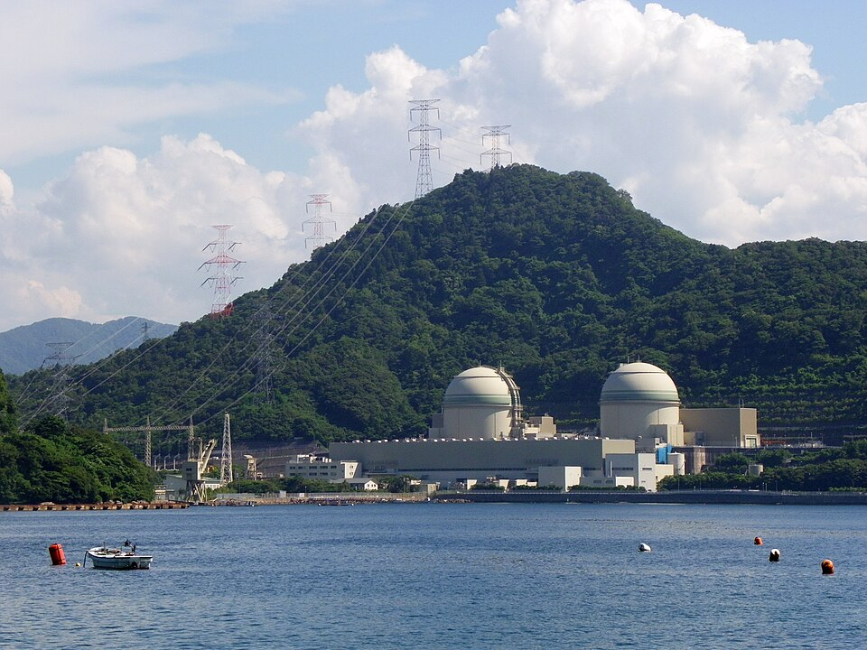
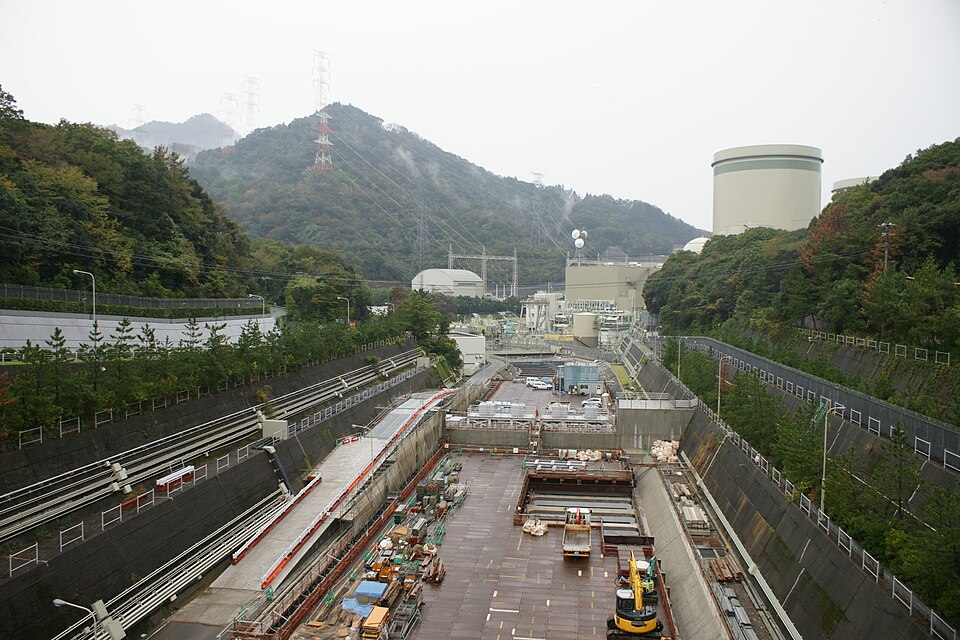
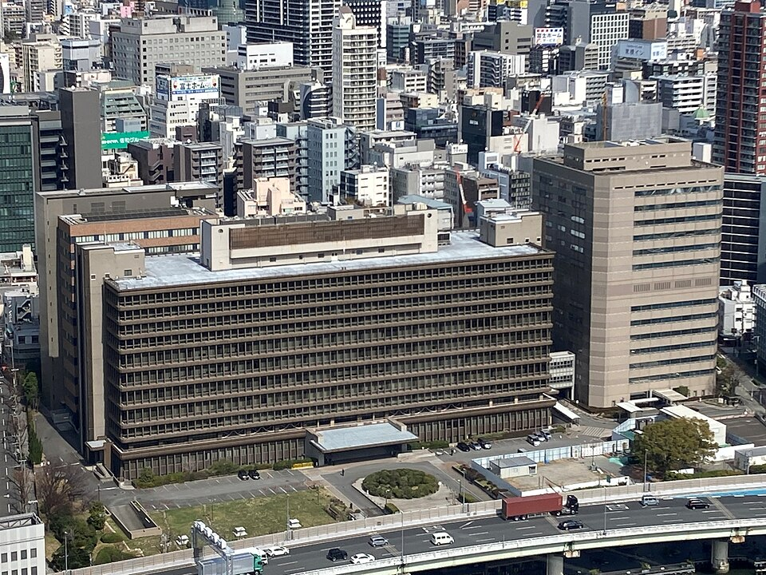

森
森山栄治
もりやま・えいじ
高浜町元助役・関連企業役員・顧問
役割：関電と地元企業の仲介、金品提供、工事発注要求の中心人物
その後：2019年3月死去。刑事責任は問われていない1
1969年〜2027年（予定）
関西電力の役職員75人が、福井県高浜町元助役・森山栄治氏および関連企業から、約3億6,000万円相当の金品を受領した。1
金品の提供者側には関電の原発関連工事を受注する吉田開発、柳田産業、塩浜工業などが関係し。森山氏を介して工事情報の提供や発注約束が行われた。1
旧経営陣9人は不起訴となり、検察審査会の議決後も再び不起訴となった一方、関西電力と株主による民事責任追及は2026年11月15日時点で継続している。1
森山栄治氏は1969年に高浜町役場へ移り、1975年に収入役、1977年に助役となった。企画課長・収入役・助役として高浜原発の立地や運営をめぐる地元折衝を担い、1987年に町を退職した後も関電プラント顧問、柳田産業相談役。オーイング取締役などの立場を得た。関電の原子力部門では、一定の役職に就いた社員が就任挨拶や季節の挨拶で森山氏を訪ねる慣習が引き継がれた。1
森山氏との会食には吉田開発、柳田産業、オーイング、塩浜工業の役員が同席することがあり。関電側が会食費を負担した。第三者委員会は、森山氏が関係企業への発注や工事情報の提供を関電役職員に要求し、その関係企業から報酬、手数料。謝礼等を得ていたと整理した。金品は現金、商品券、米ドル、金貨、小判、金杯、仕立券付きスーツ生地などで、受領者の一部は「一時的に預かった」と説明したが。第三者委員会は単なる儀礼ではなく発注を維持する構造を重視した。12
本件社内調査報告書では、「森山氏は・・・自己顕示欲を満足させるために、自己の権威の誇示、自己の価値観による礼儀の実践、人的ネットワークの維持等を目的として、無理やり金品を押し付けていた」などとされている。 しかしながら、何ら見返りを期待することなく、自己顕示欲を満足させるための「権威の誇示」や「礼儀の実践」等を目的として、本件のように社会的儀礼の範囲をはるかに超える多額の金品を提供するなどということは、容易には想定し難い。 実際にも、森山氏は、前記第４章第２及び第３のとおり、関西電力の役職員に対し、自分が関係する企業（本件取引先等）に工事等の仕事を発注することや工事に関する情報を提供することなどを要求して、これに応じさせてきたと認められるし、前記第４章第１、３の事実を併せると、そのことによって本件取引先等から報酬、手数料、謝礼等としてそれ相応の経済的利益を得てきたことがうかがわれる。 以上のことを考え併せると、森山氏が社会的儀礼の範囲をはるかに超える多額の金品を提供したのは、その見返りとして、関西電力の役職員に、自らの要求に応じて自分の関係する企業へ工事等の発注を行わせ、そのことによってそれらの企業から経済的利益を得る、という構造、仕組みを維持することが主たる目的であったとみるのが自然かつ合理的である。
意味：第三者委は、金品の目的を「自己顕示欲」ではなく、関係企業への発注を通じた経済的利益の構造維持と認定した。
森山氏は吉田開発を大飯発電所工事へ参入させることを関電側に要求した。2013年には吉田開発向けに約6,000万円相当の工事を用意する資料が作成され、環境総合テクノスを通じて2014年1月に525万円の特命発注が行われた。2013年8月と2015年11月には関電プラントから総額4,700万円の発注が確認され、2017年1月31日には京都支社が契約予定額合計約3,100万円の工事予定資料を作成した。第三者委員会は、発注予定額や工事概算額の提供と、事前の発注約束があった事例を認定した。1
当社役職員が、森山氏の要求に応じる形で、個別の工事等や発注予定額に見合う工事等を発注することを約束し、実際に発注を行っている場合もあった。また、現在または将来の工事案件や工事概算額等の情報を提供していた。
意味：受領と発注の間に、事前の約束や発注予定情報の提供があったとされる。
初期の社内調査では、関電役職員20人が森山氏から約3億2,000万円相当を受領していた。2018年2月、金沢国税局が吉田開発等を対象に税務調査を行ったことを契機に関電は問題を把握し、豊松秀己元副社長は2月13日に金品を返却したとされる。2月17日には八木誠会長、岩根茂樹社長らの金品もまとめて返却したとされる。しかし受領事実は取締役会に報告されず、社外公表も見送られた。社内調査は過去7年間を主な対象とし、原子力事業本部が主体となった部分もあったため、第三者委員会は調査の範囲と報告体制を問題にした。31
2019年9月26日、共同通信の報道で問題が公表され。翌27日に岩根社長は20人・約3億2,000万円相当の受領を説明した。10月2日に関電は社内調査報告書を公表し、10月9日に八木氏は会長を辞任、社外委員のみで構成される第三者委員会へ調査を委嘱した。2020年3月14日の報告書では、関電および子会社の役職員75人、総額約3億6,000万円相当へ範囲が広がった。第三者委員会は、個人の受領だけでなく、工事発注、事前情報、退任後報酬。取締役会と監査役の機能不全を一体のガバナンス問題として扱った。45
当社グループ役職員合計75名が、森山氏等から、総額約３億6000万円相当の金品を受領していた。 １回当たりの受領額は数万円～数十万円程度が多いが、一部の幹部は、500万円や1000万円の金品を受領することがあり、総額も数千万円から１億円強と極めて高額の金品を受け取っていた。 東日本大震災以降、原子力発電所の新規制基準対応等から、原子力発電所における工事発注の増加と時期を同じくして、金品を受領した役職員数や受領する金品の額も大きく増加した。
意味：受領者数・総額だけでなく、原発工事の増加と金品受領の拡大が同時期だったと記載されている。
第三者委員会は、関電側が森山氏との関係を断てなかった背景として、高浜発電所立地時代の話の暴露、受領発覚による社会的批判、県や町を巻き込む妨害、原発運営や再稼働への支障、前任者の対応を無にする懸念、社内での地位や出世への不安。自身や家族への危害への恐れを列挙した。2018年9月に社内報告書が完成した後も、八木氏と岩根氏は相談役の森詳介氏と協議し、情報漏洩を懸念して取締役会や社外取締役を含む個々の取締役への報告をしないと決めたとされた。21
関西電力は、2018年2月20日以降、金沢国税局による税務調査対応のための調査を開始し、同年6月22日には本件社内調査委員会の設置を決定し、同委員会は、同年9月11日付で本件社内調査報告書を提出した。しかし、本件社内調査委員会による調査は、原子力事業本部が主体となった部分も存在し、また、森山氏から金品を受領していた者を主な対象として行い、調査対象期間も過去7年間に限定するなど、その調査の範囲は不十分なものであった。また、本件社内調査報告書提出までの間、本件問題について取締役会や監査役への共有又は報告は行われなかった。さらに、本件社内調査報告書が提出された後ですら、会長11の八木誠氏（以下「八木氏」という。）及び社長の岩根茂樹氏（以下「岩根氏」という。）は、相談役の森詳介氏（以下「森氏」という。）と協議の上、本件問題を対外的に公表することはしないと決定するとともに、情報漏洩等を懸念し、取締役会への報告や社外取締役を含む個々の取締役への個別報告すら行わないことを決定した。
意味：調査の範囲が狭く、報告書提出後も経営トップが公表・取締役会報告を止めた経緯を示す。
2020年3月16日、経済産業大臣は電気事業法に基づく業務改善命令を出し、責任の所在、法令遵守体制、発注・契約の透明性。経営管理体制の改善を求めた。関電は退任役員18人に支給した嘱託等報酬約2億6,000万円の全額回収方針を決め、2020年6月には旧取締役5人を提訴した。大阪地検特捜部は2021年11月9日に旧経営陣9人を嫌疑不十分で不起訴とし、2022年8月の検察審査会議決後も再捜査を経て不起訴とした。2023年には株主代表訴訟が提起され、2026年9月10日に大阪地裁で会社請求約19億円と株主請求約94億円の訴訟が結審した。判決は2027年3月3日予定で、2026年11月15日時点では未確定である。678
経済産業大臣からの命令内容 １．公益事業である電気事業の運営の健全性及び適切性を確保するため、以下の事項を含む問題事案の再発防止のための実効性ある具体的方策（以下「再発防止策」という。）を策定し、及び実施すること。 （１）今回の処分を踏まえた役職員の責任の所在の明確化 （２）健全かつ適切な業務運営に取り組むための法令等遵守体制の抜本的な強化並びに法令等遵守を重視する健全な組織風土の醸成 （３）工事の発注・契約に係る業務の適切性及び透明性を確保するための業務運営体制の確立 ・工事の発注・契約に係るルールの明確化（特定の者に不透明な形で事前の情報提供をしないこと及び特命発注理由の明確化を含む。）
意味：当局命令は、個人処分だけでなく、発注情報・特命発注・組織風土まで対象にした。
刑事手続では有罪判決に至らなかったが、第三者委員会が認定した事実と、会社や株主が主張する損害の範囲は別の手続で判断される。会社側の訴訟では旧取締役の善管注意義務・忠実義務違反、金品受領と発注の関係、退任後報酬による補填が争点となる。株主側の請求では、関電が旧取締役5人に対して提起した訴訟と重なる事実関係に加え、会社の損害を株主が代表して請求する構造が問題となる。2026年9月10日の結審時点で、会社請求は約19億円、株主請求は約94億円と報じられたが、どの損害項目が認められるか。旧取締役それぞれの責任がどのように区分されるかは判決前である。2026年11月15日現在、行政上の業務改善命令と社内の報酬回収方針は示されているものの、民事上の最終的な負担額は確定していない。98
関電は2019年12月に贈答を受けることを禁止する規程を制定し、2020年3月の業務改善命令を受けて法令遵守体制と発注契約の管理を見直した。第三者委員会は、特定の関係者に依存していた地元調整のあり方だけでなく、取締役会への報告経路、社外取締役の監督、内部通報の利用。監査の実効性を一つの管理課題として示した。経済産業省は他の電力会社にも類似事案の有無の報告を求めた。これらの対応は、関電一社の金品授受を処理する措置であると同時に、原発関連工事の発注情報が特定の企業に先に伝わることを防ぐ手続として整理された。もっとも、法改正そのものが本件だけを直接の契機として行われたと確認できる資料は未確認である。関電の公表資料では、受領した役職員への社内処分、役員の辞任、報酬回収。経営刷新本部の設置も示された。これらは、金品を受けた個人だけを対象にせず、関係を把握していた経営層と発注を担当した部門の対応を含めて問題を処理する措置であった。210




| 関西電力本店・関電ビルディング | 大阪府大阪市北区中之島3丁目6番16号 | 問題の当事会社本社 | 18 |
| 高浜発電所 | 福井県大飯郡高浜町田ノ浦 | 森山氏が関係した原発立地・工事発注の中心 | 19 |
| 高浜町役場 | 福井県大飯郡高浜町宮崎86-23-2 | 森山氏が助役を務めた自治体 | 20 |
| 吉田開発本社所在地周辺 | 福井県大飯郡高浜町 | 関電原発関連工事を受注した企業の所在地 | 1 |
| 金沢国税局 | 石川県金沢市広坂2-2-60 | 税務調査が問題発覚の端緒となった機関 | 21 |
| 大阪地方検察庁 | 大阪府大阪市福島区福島1-1-60 | 旧経営陣の刑事告発・不起訴判断 | 22 |
| 大阪地方裁判所 | 大阪府大阪市北区西天満2-1-10 | 関電・株主による損害賠償訴訟の裁判所 | 23 |
| 国会議事堂 | 東京都千代田区永田町1-7-1 | 国会で問題が追及された場所 | 24 |
関係企業から森山氏への報酬等が金品提供の原資の一部となり、森山氏は関電役職員に関係企業への発注や工事情報の提供を求めた。関電側では、受領金品の返却に加え、退任後の嘱託等報酬による追加納税分・過去の報酬削減分の補填が問題となった。17
もりやま・えいじ
高浜町元助役・関連企業役員・顧問
役割：関電と地元企業の仲介、金品提供、工事発注要求の中心人物
その後：2019年3月死去。刑事責任は問われていない1
やぎ・まこと
関西電力会長・元原子力事業本部幹部
役割：金品受領、取締役会未報告、公表見送りに関与
その後：2019年10月会長辞任。刑事不起訴3
いわね・しげき
関西電力社長
役割：金品受領、社内調査後の公表見送りに関与
その後：2020年辞任。刑事不起訴11
とよまつ・ひでき
元副社長・原子力事業本部長
役割：約1億1,057万円相当を受領と報告。返却と報酬補填の対象
その後：辞任・嘱託退任。刑事不起訴3
すずき・さとし
元常務執行役員・原子力部門幹部
役割：約1億2,367万円相当を受領したと報道
その後：その後の処分の詳細は未確認25
おおつか・しげき
元常務執行役員
役割：関連企業からの直接金品受領約390万円の一部
その後：その後の処分は未確認26
もり・しようすけ
関西電力相談役・元会長
役割：八木氏、岩根氏と公表見送りや報酬補填を協議
その後：刑事不起訴。検察審査会で起訴相当等27
ただき・けいいち
第三者委員会委員長・元検事総長
役割：調査、原因分析、再発防止策を取りまとめ
その後：2020年3月に報告書を提出2
もりもと・たかし
2020年当時の関西電力社長
役割：業務改善命令を受領し、経営刷新に対応
その後：本件のその後の処分は未確認13
吉田開発関係者
役割：森山氏と関係する企業として関電工事への参入を求められた
その後：関電関連工事を受注1
柳田産業関係者
役割：森山氏が相談役を務めた企業の関係者
その後：会食・金品提供に関与1
塩浜工業関係者
役割：会食、見舞金等で森山氏と関電役職員の接点となった
その後：詳細は未確認1
いなだ・ともみ
衆議院議員
役割：森山氏関連企業の役員が後援会長だったとの報道に関連
その後：本件金品受領との直接関与は未確認10
相関図は、森山氏を中心とする地元調整、関電旧経営陣、関係企業。調査・行政・株主の関係を示す。森山氏、関係企業、地元調整との接点は闇の人脈として扱い。報道や未確認事項は認定事実と区別する。
庇護・口利き。森山氏は高浜原発の立地・運営に関する地元折衝を担い、退職後も幹部の挨拶先・相談先となった。関電側は地元での影響力と不正情報の保有を恐れ、関係を断てなかった。第三者委員会概要2
上司と部下・金銭授受。八木氏は原子力部門在籍時から森山氏と接点を持ち、商品券・金貨等を受領した。森山氏の要求と受領の事実を知り得ながら、取締役会への報告をしなかったと整理された。責任調査委報告11
金銭授受・対立。岩根氏は社長として問題を把握し、金品を返却する対応を取ったが、2018年社内調査後も公表しなかった。後に社長を辞任した。第三者委報告書1
資金の出し手と受け手。豊松氏は約1億1,057万円相当を受領し、2018年2月に森山氏へ返却したとされる。関西電力資料3
金銭授受。鈴木氏は約1億2,367万円相当を受領したと報道された。第三者委報告書の公開版では個人名が一部匿名化されている。Foresight25
資金の出し手と受け手。吉田開発は森山氏と関係する企業とされ、森山氏は吉田開発への発注・参入を関電に要求した。第三者委報告書1
盟友・資金の出し手と受け手。森山氏は柳田産業相談役を務め、同社関係者が関電幹部への会食・金品提供に関与した。第三者委報告書1
資金の出し手と受け手。塩浜工業関係者も会食や見舞金等に関係し、森山氏と関電役職員の接点となった。第三者委報告書1
上司と部下・共同行動。2018年社内調査後、両氏は相談役の森詳介氏とも相談し、取締役会への報告・公表を見送ったと第三者委が整理した。第三者委報告書1
盟友・経営判断。旧経営トップ同士として、問題公表や報酬補填に関する経営判断に関与した。関西電力調査報告書27
上司と部下。森氏は相談役、岩根氏は社長として、問題対応を協議する立場にあった。第三者委報告書1
資金の出し手と受け手・報酬補填。森氏・八木氏の経営期に、退任後報酬による減額分補填が決定されたと告発・報道された。関西電力プレスリリース7
調査者と対象経営者。但木氏が委員長を務める第三者委員会は、八木氏らが問題を取締役会に報告しなかったことを批判した。関西電力概要2
対立・告発。個人株主の提訴請求を受け、関電は2020年に旧取締役5人を提訴し、2023年には株主代表訴訟も提起された。関西電力開示9
対立・刑事責任追及。2021年に嫌疑不十分で不起訴、検察審査会の議決後も再捜査を経て不起訴となった。報道16
前記 5 で記載した不安感・恐怖感を関西電力の役職員が抱いていたにせよ、自分の関係する企業への発注を要求し、時に恫喝をも行う森山氏という人物から多額の金品を受領し、そうした関係を継続することは、客観的に見れば明らかに不適切であって、およそ正常ではない。そして、それにもかかわらず、30 年以上もの長期間にわたり、誰一人として森山氏と関西電力との間のこの異常な関係に対して声を上げる勇気を持てなかったことは、全くもって理解し難い。 関西電力においては、電力の安定供給の観点からも経営の観点からも、原子力発電所の安定的な運営・稼働を重視する考えが強く、また、上記で述べた前任者らからの伝承や自らの保身のこともあって、これらの関西電力「内」の事情がユーザーや株主を含めた関西電力「外」の関係者の期待や目線より優先されてきたことは否めず、関西電力には、自社の業務運営を滞りなく行うことが至上命題であるととうる企業風土があるように見受けられる。そして、かくも長期間にわたって、多くの幹部が森山氏との関係に問題意識を持ち得る状況にありながらその関係を断絶できなかったことは、関西電力において、内向きの企業体質の下で経営陣が問題を先送りし、本件のような不適切、不正常な問題に組織的に対峙するというごく基本的なガバナンスが機能しなかったことによるものと結論付けざるを得ない。
意味：第三者委員会は、原因を「内向きの企業体質」と経営陣の先送り、ガバナンス不全に求めた。
公開資料で確認できる中心は、森山氏と高浜町・関西電力・関係企業の地元調整、顧問料・手数料、金品提供。発注情報の関係である。暴力団・総会屋・仕手筋の具体的関与、海外口座、森山氏の死の事件性は確認できない。政治関係や不審死は報道・疑惑または未確認として扱う。
森山栄治 認定
吉田開発、柳田産業、塩浜工業 認定
森山氏、関電役職員75人 認定
関電、吉田開発。関電プラント等 認定
八木氏・岩根氏・豊松氏ら、政治資金団体 報道
オーイング・アイビックス関係者、稲田氏 報道
具体的組織名・人物 確認できない
具体的口座・法人 確認できない
森山氏 疑惑
ではなぜ、関西電力は森山氏との関係を断ち切ることができなかったのか。本調査の過程で収集した資料からは、関西電力が森山氏との関係を維持しなければならなかった決定的な理由は明らかではなく、また、本件ヒアリングにおいても、関西電力が森山氏との関係を維持しなければならなかった決定的な理由を明確に述べた者はいなかった。しかし、本調査の結果明らかとなった事実関係を総合すれば、第５章で詳述するとおり、関西電力の役職員が一様に森山氏との関係を断ち切ることができなかった原因は、仮に森山氏との関係を断ち切った場合、①関西電力にとって不都合であり世間に公表されたくない高浜発電所立地時代の話を森山氏に暴露されるのではないか、②関西電力の役職員が森山氏から金品を受領してきたことが露見することで関西電力が社会的批判に晒されるのではないか、③森山氏が県や町、地元を巻き込んだ妨害行動に出るのではないか、④これらの結果、原子力発電所の運営や再稼働に支障が生じるのではないか、また、⑤自らの前任者らが苦心して森山氏の対応に当たってきた努力が全て水泡に帰すのではないか、⑥上司や先輩から森山氏とは事を荒立てないようにと指示・示唆され、そのことが事実上の業務命令となっている状況下で、これに従わないと社内における自らの地位が危うくなるのではないか、あるいは、出世の道を閉ざされるのではないか、さらには、⑦自身及び家族が危害を加えられるのではないかなど、各人各様の懸念に根差した不安感・恐怖感にあったのではないかと考えられる。
意味：地元への恐れや受領発覚への恐れと社内人事上の恐れ及び家族への危害への恐れが列挙されている。
| 大阪地検特捜部 | 2021-11-09 | 嫌疑不十分で不起訴 |
| 大阪第二検察審査会 | 2022-08 | 一部「起訴相当」「不起訴不当」 |
| 大阪地検 | 2022-12 | 再捜査後も不起訴 |
金品受領、特別背任、報酬補填等の疑い。刑事判決なし。刑事責任は確定していない141516
| 経済産業大臣 | 2020-03-16 | 業務改善命令 |
電気事業法に基づく業務改善。確定6
| 大阪地裁 | 2020-06 | 提訴 |
| 大阪地裁 | 2026-09-10 | 結審。会社請求約19億円 |
| 大阪地裁 | 2027-03-03予定 | 判決予定。2026-11-15時点で未確定 |
| 大阪地裁 | 2023-08 | 株主6人が提訴 |
| 大阪地裁 | 2026-09-10 | 結審。株主請求約94億円 |
| 大阪地裁 | 2027-03-03予定 | 判決予定。2026-11-15時点で未確定 |
当社グループ役職員合計75名が、森山氏等から、総額約３億6000万円相当の金品を受領していた。 １回当たりの受領額は数万円～数十万円程度が多いが、一部の幹部は、500万円や1000万円の金品を受領することがあり、総額も数千万円から１億円強と極めて高額の金品を受け取っていた。 東日本大震災以降、原子力発電所の新規制基準対応等から、原子力発電所における工事発注の増加と時期を同じくして、金品を受領した役職員数や受領する金品の額も大きく増加した。
意味：受領者数・総額だけでなく、原発工事の増加と金品受領の拡大が同時期だったと記載されている。
本件社内調査報告書では、「森山氏は・・・自己顕示欲を満足させるために、自己の権威の誇示、自己の価値観による礼儀の実践、人的ネットワークの維持等を目的として、無理やり金品を押し付けていた」などとされている。 しかしながら、何ら見返りを期待することなく、自己顕示欲を満足させるための「権威の誇示」や「礼儀の実践」等を目的として、本件のように社会的儀礼の範囲をはるかに超える多額の金品を提供するなどということは、容易には想定し難い。 実際にも、森山氏は、前記第４章第２及び第３のとおり、関西電力の役職員に対し、自分が関係する企業（本件取引先等）に工事等の仕事を発注することや工事に関する情報を提供することなどを要求して、これに応じさせてきたと認められるし、前記第４章第１、３の事実を併せると、そのことによって本件取引先等から報酬、手数料、謝礼等としてそれ相応の経済的利益を得てきたことがうかがわれる。 以上のことを考え併せると、森山氏が社会的儀礼の範囲をはるかに超える多額の金品を提供したのは、その見返りとして、関西電力の役職員に、自らの要求に応じて自分の関係する企業へ工事等の発注を行わせ、そのことによってそれらの企業から経済的利益を得る、という構造、仕組みを維持することが主たる目的であったとみるのが自然かつ合理的である。
意味：第三者委は、金品の目的を「自己顕示欲」ではなく、関係企業への発注を通じた経済的利益の構造維持と認定した。
ではなぜ、関西電力は森山氏との関係を断ち切ることができなかったのか。本調査の過程で収集した資料からは、関西電力が森山氏との関係を維持しなければならなかった決定的な理由は明らかではなく、また、本件ヒアリングにおいても、関西電力が森山氏との関係を維持しなければならなかった決定的な理由を明確に述べた者はいなかった。しかし、本調査の結果明らかとなった事実関係を総合すれば、第５章で詳述するとおり、関西電力の役職員が一様に森山氏との関係を断ち切ることができなかった原因は、仮に森山氏との関係を断ち切った場合、①関西電力にとって不都合であり世間に公表されたくない高浜発電所立地時代の話を森山氏に暴露されるのではないか、②関西電力の役職員が森山氏から金品を受領してきたことが露見することで関西電力が社会的批判に晒されるのではないか、③森山氏が県や町、地元を巻き込んだ妨害行動に出るのではないか、④これらの結果、原子力発電所の運営や再稼働に支障が生じるのではないか、また、⑤自らの前任者らが苦心して森山氏の対応に当たってきた努力が全て水泡に帰すのではないか、⑥上司や先輩から森山氏とは事を荒立てないようにと指示・示唆され、そのことが事実上の業務命令となっている状況下で、これに従わないと社内における自らの地位が危うくなるのではないか、あるいは、出世の道を閉ざされるのではないか、さらには、⑦自身及び家族が危害を加えられるのではないかなど、各人各様の懸念に根差した不安感・恐怖感にあったのではないかと考えられる。
意味：地元への恐れや受領発覚への恐れと社内人事上の恐れ及び家族への危害への恐れが列挙されている。
いずれにせよ、関西電力の役職員が森山氏から多額の金品の提供を受けるとともに、森山氏が指定する企業への強引な発注要求に応じるという異常な関係が30年以上もの長期間にわたって継続してきたことは、明らかなコンプライアンス違反であり、かつ、ガバナンスという観点からも極めて重大かつ深刻な事態であるといわざるを得ない。
意味：第三者委員会自身が、関係を「異常」と明示し、個人の不正に限定していない。
関西電力は、2018年2月20日以降、金沢国税局による税務調査対応のための調査を開始し、同年6月22日には本件社内調査委員会の設置を決定し、同委員会は、同年9月11日付で本件社内調査報告書を提出した。しかし、本件社内調査委員会による調査は、原子力事業本部が主体となった部分も存在し、また、森山氏から金品を受領していた者を主な対象として行い、調査対象期間も過去7年間に限定するなど、その調査の範囲は不十分なものであった。また、本件社内調査報告書提出までの間、本件問題について取締役会や監査役への共有又は報告は行われなかった。さらに、本件社内調査報告書が提出された後ですら、会長11の八木誠氏（以下「八木氏」という。）及び社長の岩根茂樹氏（以下「岩根氏」という。）は、相談役の森詳介氏（以下「森氏」という。）と協議の上、本件問題を対外的に公表することはしないと決定するとともに、情報漏洩等を懸念し、取締役会への報告や社外取締役を含む個々の取締役への個別報告すら行わないことを決定した。
意味：調査の範囲が狭く、報告書提出後も経営トップが公表・取締役会報告を止めた経緯を示す。
前記 5 で記載した不安感・恐怖感を関西電力の役職員が抱いていたにせよ、自分の関係する企業への発注を要求し、時に恫喝をも行う森山氏という人物から多額の金品を受領し、そうした関係を継続することは、客観的に見れば明らかに不適切であって、およそ正常ではない。そして、それにもかかわらず、30 年以上もの長期間にわたり、誰一人として森山氏と関西電力との間のこの異常な関係に対して声を上げる勇気を持てなかったことは、全くもって理解し難い。 関西電力においては、電力の安定供給の観点からも経営の観点からも、原子力発電所の安定的な運営・稼働を重視する考えが強く、また、上記で述べた前任者らからの伝承や自らの保身のこともあって、これらの関西電力「内」の事情がユーザーや株主を含めた関西電力「外」の関係者の期待や目線より優先されてきたことは否めず、関西電力には、自社の業務運営を滞りなく行うことが至上命題であるととうる企業風土があるように見受けられる。そして、かくも長期間にわたって、多くの幹部が森山氏との関係に問題意識を持ち得る状況にありながらその関係を断絶できなかったことは、関西電力において、内向きの企業体質の下で経営陣が問題を先送りし、本件のような不適切、不正常な問題に組織的に対峙するというごく基本的なガバナンスが機能しなかったことによるものと結論付けざるを得ない。
意味：第三者委員会は、原因を「内向きの企業体質」と経営陣の先送り、ガバナンス不全に求めた。
金品を受領した役職員の多くは、受領し管理していた現金・商品券等を用いて同額相当の品物を購入し、森山氏に贈ることで金品相当額を返却していた。 報酬等の名目で、本件取引先から多額の金銭を受領しており、森山氏が提供した金品の原資の一部は、本件取引先からの報酬等から拠出されていたと評価する方が実態に合うと考えられる。
意味：返礼による形式的な返却と、取引先から森山氏への金銭供与が併記されている。
当社役職員が、森山氏の要求に応じる形で、個別の工事等や発注予定額に見合う工事等を発注することを約束し、実際に発注を行っている場合もあった。また、現在または将来の工事案件や工事概算額等の情報を提供していた。
意味：受領と発注の間に、事前の約束や発注予定情報の提供があったとされる。
○覺道政府参考人 お答え申し上げます。 第三者委員会の調査報告書におきましては、関西電力が森山元助役との関係を断ち切れなかった理由としまして、森山氏が県や町、地元を巻き込んだ妨害行動に出るのではないか、また、その結果、原子力発電所の運営や再稼働に支障が生じるのではないか、こういった懸念が指摘されているほか、関西電力の役職員が森山氏から金品を受領してきたことが露見することで関西電力が社会的批判にさらされるのではないか、上司や先輩から森山氏とは事を荒立てないようにと指示、示唆され、そのことが事実上の業務命令となっている状況下で、これに従わないと社内におけるみずからの地位が危うくなるのではないか、あるいは、出世の道が閉ざされるのではないかなど、各人各様の懸念に根差した不安感、恐怖感にあったのではないか、このように指摘をされてございます。 また、こうした森山氏との関係に加えまして、調査報告書におきましては、コンプライアンスよりも事業活動が優先されてしまう、また、ユーザーや社会一般の視点が欠落してしまうという内向きの企業体質が数々の原因に通底する根本的問題であったと認定されているところでございます。
意味：第三者委員会の認定が、国会答弁で「業務命令」「出世」「恐怖」として読み上げられている。
○菅原国務大臣 ただいま石田先生からお話がありました件、まず、電気事業という極めて公益性の高い事業を担う、民間会社といえ、この関電が、いわゆる社会との信頼関係を築いた上で事業を進めていくべきにもかかわらず、こうした電力会社の役職員が不透明な形で多額の金品を長年にわたって受領していた件、極めて大きな問題であります。 今お話があった報告徴収の件でございますが、九月二十七日に、私ども報道で初めてこの案件を聞きました。去年の九月に社内的な報告書がまとまっておったにもかかわらず、経産省に全く一年間報告がなく、こういう意味では、その点も極めて大きな問題だというふうに認識いたしました。
意味：行政側が、金品受領そのものに加え、経産省への報告遅延を問題視している。
経済産業大臣からの命令内容 １．公益事業である電気事業の運営の健全性及び適切性を確保するため、以下の事項を含む問題事案の再発防止のための実効性ある具体的方策（以下「再発防止策」という。）を策定し、及び実施すること。 （１）今回の処分を踏まえた役職員の責任の所在の明確化 （２）健全かつ適切な業務運営に取り組むための法令等遵守体制の抜本的な強化並びに法令等遵守を重視する健全な組織風土の醸成 （３）工事の発注・契約に係る業務の適切性及び透明性を確保するための業務運営体制の確立 ・工事の発注・契約に係るルールの明確化（特定の者に不透明な形で事前の情報提供をしないこと及び特命発注理由の明確化を含む。）
意味：当局命令は、個人処分だけでなく、発注情報・特命発注・組織風土まで対象にした。
当社は、本年３月１４日、第三者委員会から調査報告書を受領しましたが、その中で、一部の役員の退任後、嘱託等の業務を委嘱する際の報酬について、「金品受取り問題に関する修正申告時の追加納税分」や、「過去の経営不振時の役員報酬削減分」を補填する趣旨が含まれていると指摘されました。 当社としては、ご指摘を厳粛かつ真摯に受け止め、社内で速やかに事実関係を確認いたしました。その後、同様の対応が確認された他の退任役員を含む全対象者に、今般の事態ならびに当社の対応の方向性を説明してきましたが、本日の取締役会において、以下の対応方針により、支給済みの嘱託等報酬の全額（約２．６億円）回収を図ることを決定しました。
意味：金品受領に伴う追加納税や過去の報酬削減を、退任後報酬で補填したとする指摘と会社対応を示す。
関電は贈答を受けることを禁止する規程を制定した。2
経済産業大臣は発注透明性、法令遵守、経営管理体制の改善を命じた。6
外部専門家を含む法令遵守体制の再構築が命令内容に組み込まれた。6
内部通報制度の利用促進と不祥事報告体制の整備が求められた。6
経済産業省は他の電力会社に、金品受領、不適切発注。役員報酬補填に類似する事案の有無を報告させた。10
第三者委員会は内向きの企業体質是正策として、取締役会長に社外者を置くことを提言した。2
旧経営陣側：金品を「一時的に預かった」「返却を申し出たが拒絶された」と説明した。4
第三者委員会：単なる儀礼や一時保管ではなく、企業側の不適切行為と金品提供・工事発注の構造的関係を重視した。2
関西電力側：社内調査後も情報漏洩等を懸念して取締役会への報告や公表を見送った。1
第三者委員会：公表を取締役会で議論しなかったことはガバナンスの機能不全で、隠ぺいの謗りを免れないと指摘した。1
旧経営陣側：工事価格自体が不合理ではなく、発注は事業上の判断だったと主張している。2
第三者委員会・株主側：価格が不合理とまでは認定されなくても、事前情報提供、発注約束、金品受領。取締役の善管注意義務違反が損害を生じさせたと主張している。9